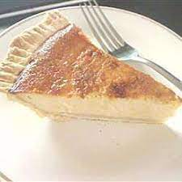

Honey Pie from Sifnos

These cakes are usually prepared during the Easter festivities in the Cycladic islands, especially in Sifnos and Ios.
This is an Aegean cheesecake prepared with honey and unsalted mizithra or ricotta cheese.
Ingredients
- 1¾ cups all-purpose flour
- 2 tablespoons white sugar
- ½ cup butter, cut into small pieces
- ¼ cup cold water
- 4 eggs
- ¼ cup white sugar
- 1 tablespoon all-purpose flour
- ½ teaspoon ground cinnamon, divided
- ¼ cup thyme honey
- 1 (16 ounce) container ricotta cheese
Steps
- Stir together 1 3/4 cups flour and 2 tablespoons sugar in a large bowl. Work in butter until the mixture becomes crumbly. Stir in water a tablespoon at a time, just until the dough comes together and is no longer dry. Form into a ball, and wrap with plastic; refrigerate 30 minutes.
- Preheat oven to 350 degrees F (175 degrees C).
- Roll out the dough on a floured surface and line a 10-inch pie pan. Trim excess from the edges of the pan. Pierce the bottom of the dough several times with a fork, then set aside.
- Beat eggs in a large bowl until soft peaks form. Gradually beat in 1/4 cup sugar 1 tablespoon flour, and half of the cinnamon; continue beating until firm peaks form. Beat in honey, then fold in ricotta cheese until evenly combined. Pour the filling into the prepared pie shell and smooth the top of the pie with a moistened knife.
- Bake in preheated oven until the center is set and the top is dark golden brown, 50 to 60 minutes. Once finished, remove from oven, and sprinkle with remaining cinnamon.
return